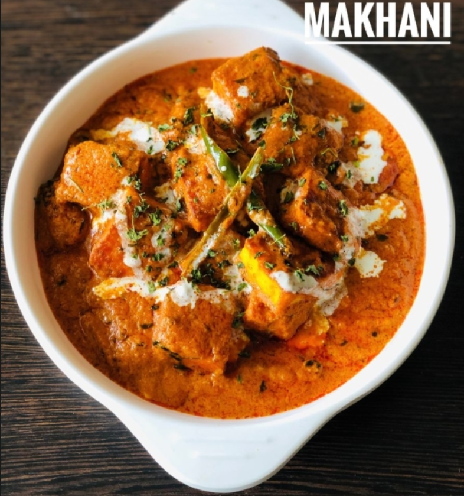

Paneer Makhni
<<<<<<< HEAD

=======
 >>>>>>> 6819dae37788feaa4662cec59eb3a46c11c7e4a9
>>>>>>> 6819dae37788feaa4662cec59eb3a46c11c7e4a9
Description
Paneer Makhani is one of the most ordered dish in any Indian Restuarant.
Paneer Makhani is a mildly spicy dish. The tomato gravy is creamy textured
and somewhat sweet and tangy. The paneer pieces are shallow fried and
added to the gravy. Paneer makhani gets its name ‘Makhani’ from its
liberal use of butter, cream and cashewnut paste in it. Here is Paneer
Makhani without onion garlic restuarant style.
Ingredients
- 2 cups Fresh Tomato Puree
- 2 – 3 tsp Kashmiri Lal Mirch Powder
- 1 tsp Cumin Seeds (Jeera)
- 1 – 2 tsp Sugar
- 2 – 3 Green Chillies
- 1 tsp Cumin Powder
- 2 tblsp Cashew Paste
- 4 tblsp Amul Butter
- 3 – 4 tblsp Fresh Cream
- 2 tsp Dry Kasoori Methi (Dried Fenugreek Leaves)
- 3 tblsp Oil
- Salt to taste
Steps
-
Heat 2 tblsp of butter in a pan and add the cumin seeds. WHen the cumin
seeds begin to crackle add the slit green chillies. Stir it for a minute
and then add the strained tomato gravy base. Add all the dry masalas.
-
Add the cumin powder, red chilly powder, garam masala powder, sugar and
salt. Remember that you have added salt already in the marinate. Also
the amount of sugar that you add depends upon the sourness of the
tomatoes. If the tomatoes are too sour adjust the sugar accordingly.
- Add crushed dry kasoori methi. Mix well.
-
Also add 1/2 cup of water and let the gravy simmer for a minute or 2.
-
Now add the shallow fried paneer pieces. Make sure all the paneer pieces
are covered with the gravy.
-
Adjust the consistency of the gravy. Add some more water if need be.
-
Lower the flame and add fresh cream at this stage. Mix it quickly as we
will not be cooking for too long now. Otherwise the cream may curddle.
-
Sprinkle some more garam masala. But this is optional Remove from the
flame and add some more butter if you want. This is also completely
optional.
-
Transfer Paneer makhani to a serving bowl and garnish with fresh cream
and dry fenugreek leaves.
- Your No Onion Garlic Paneer makhani is ready.